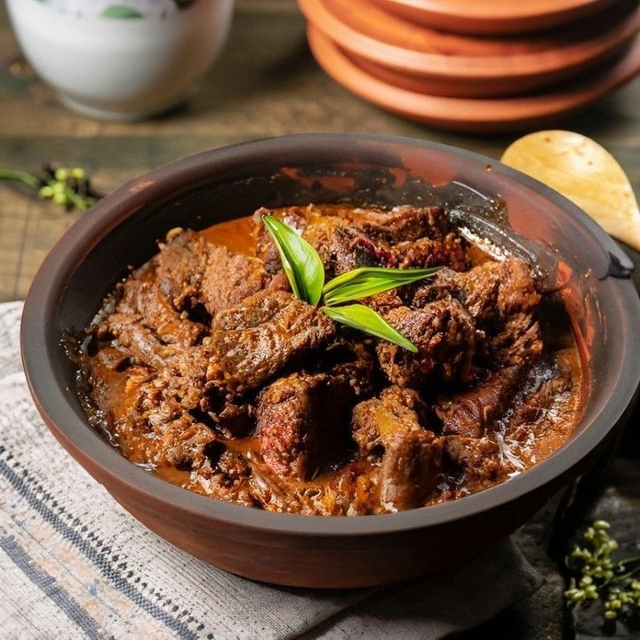
Popular
WEST SUMATRA
Rendang
Daging dengan rempah khas Minangkabau.
Rich & Spicy
01 ↗
Dari Sabang sampai Merauke, temukan kekayaan rasa, cerita, dan kelezatan kuliner Nusantara.
Food Choices
Provinces
% Indonesian
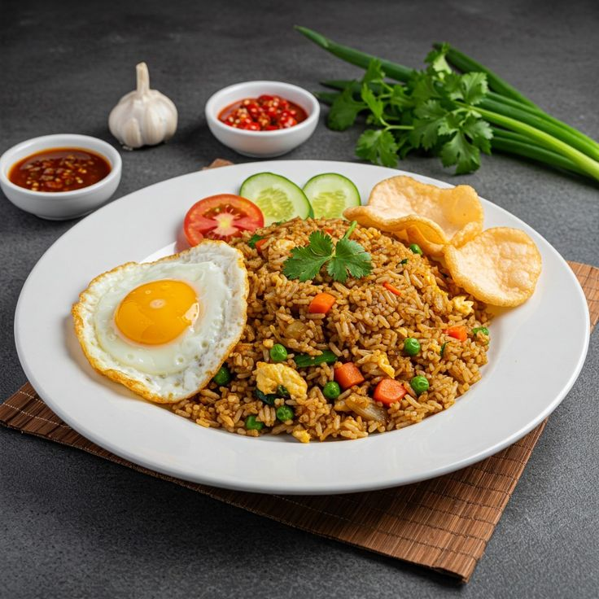
Berbagai hidangan khas Indonesia yang wajib kamu coba.

PopularDaging dengan rempah khas Minangkabau.
Nasi goreng dengan bumbu dan rempah pilihan.
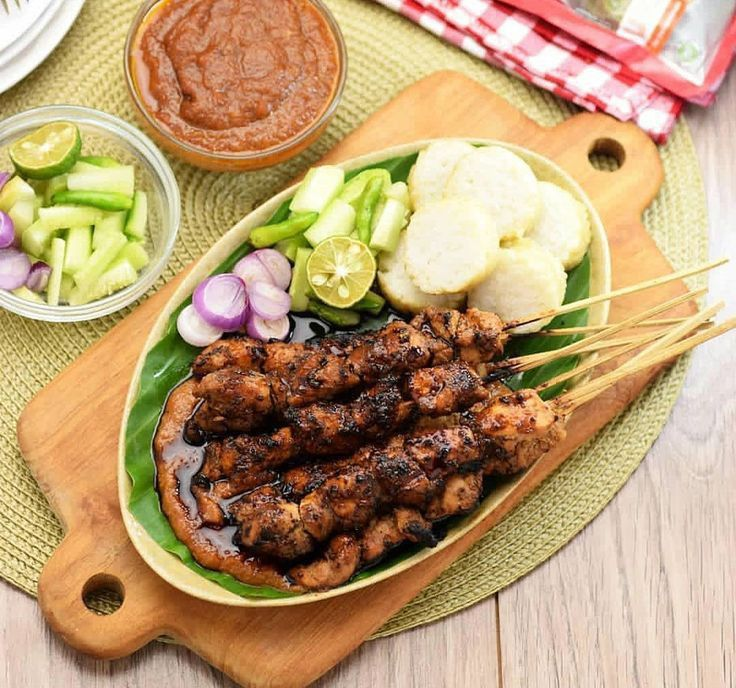
Potongan ayam panggang dengan saus kacang.
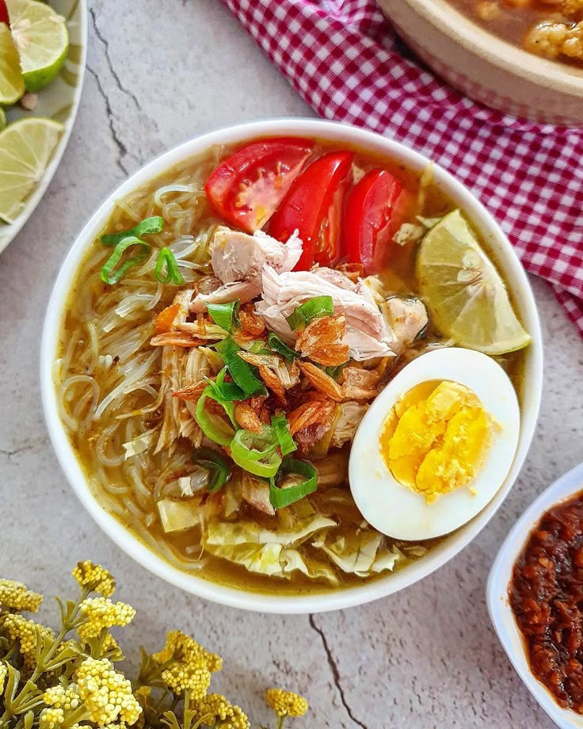
Sup ayam hangat dengan kuah rempah.
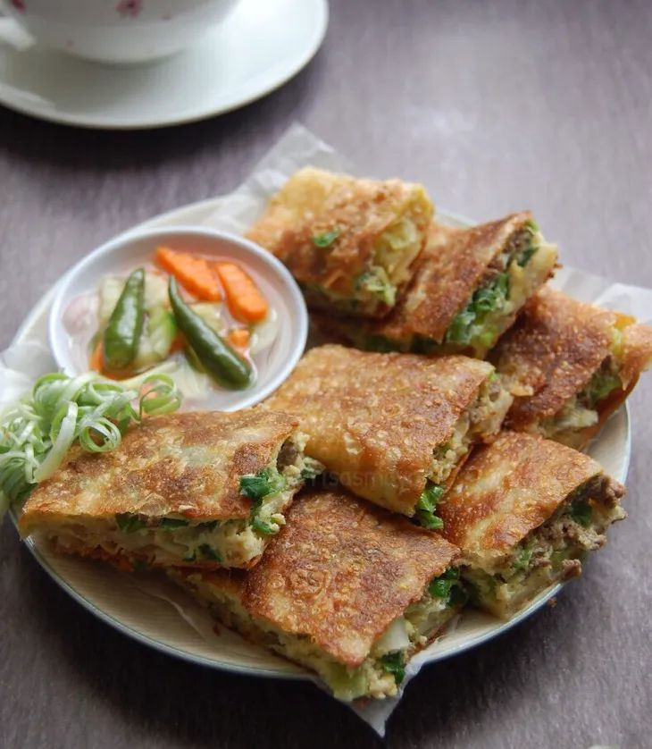
Camilan populer dengan berbagai isian.
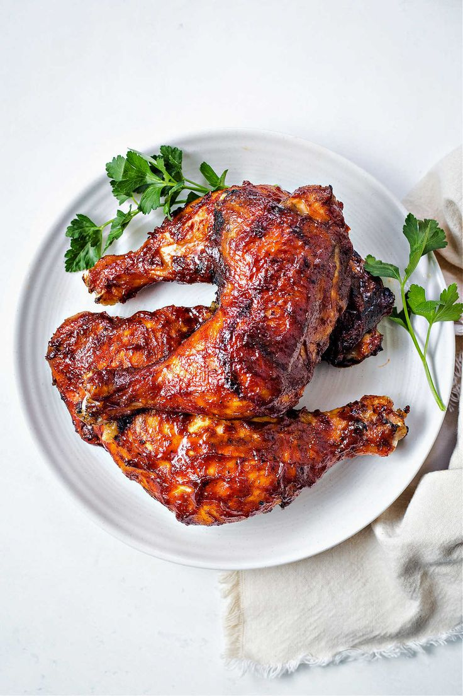
Ayam dengan bumbu khas yang dibakar.
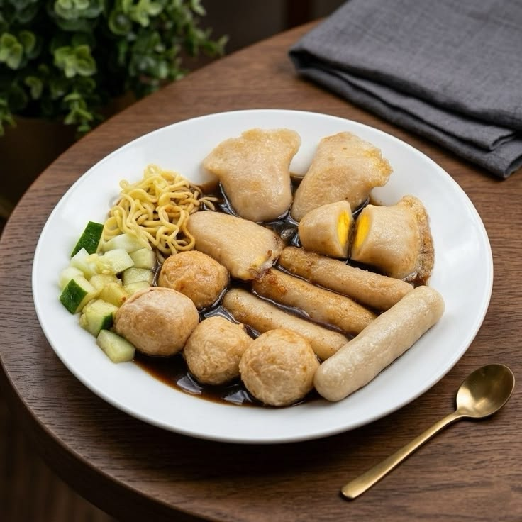
Olahan ikan dengan kuah cuko khas Palembang.

Sup daging dengan kuah hitam khas kluwek.
Setiap daerah punya cerita dan cita rasa yang berbeda.
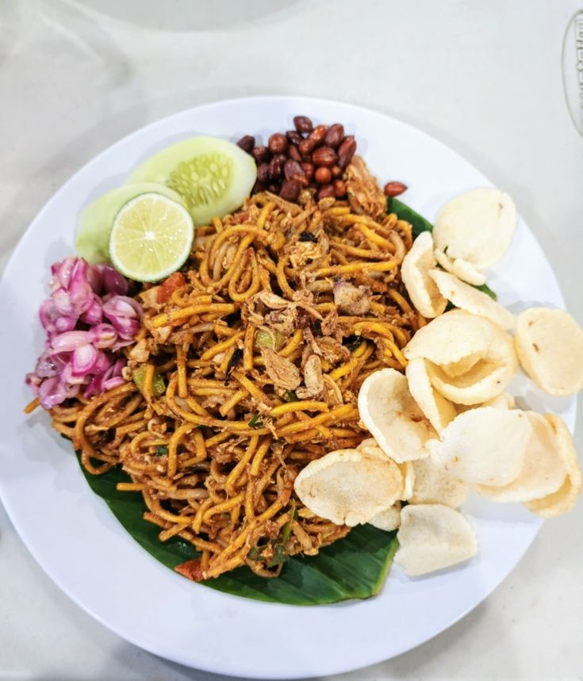

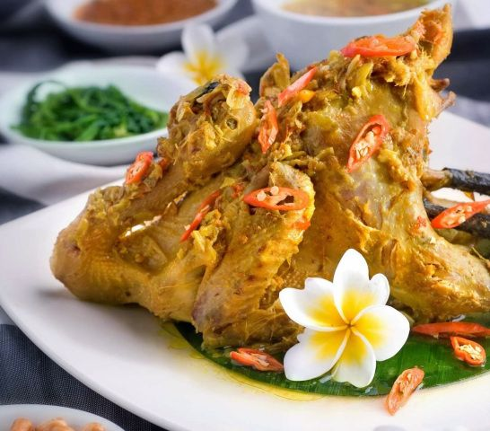
Perpaduan daging, santan, dan rempah-rempah yang dimasak perlahan hingga menghasilkan cita rasa khas yang kaya dan istimewa.
Discover More ↗Akhiri petualangan rasa dengan jajanan manis Nusantara.
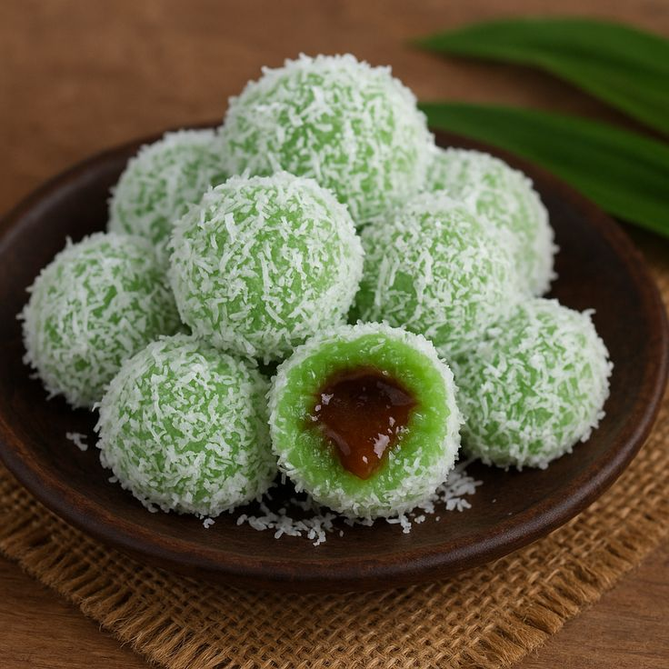
Kue tradisional dengan gula merah.
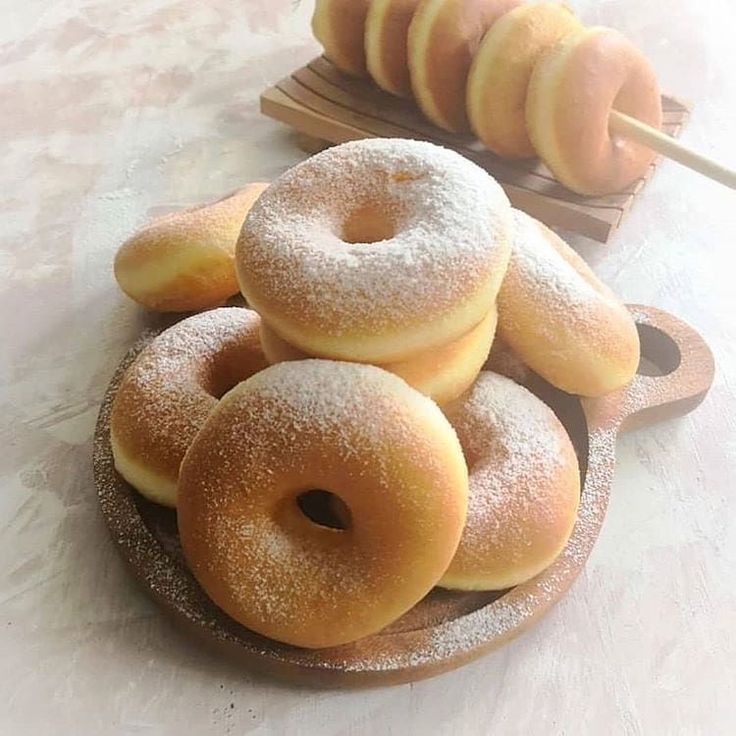
Camilan manis untuk menemani harimu.

Sensasi dingin dan manis yang menyegarkan.
FOODVERSE adalah ruang untuk mengenal kekayaan kuliner Indonesia. Kami percaya bahwa setiap hidangan punya cerita, budaya, dan tradisi yang layak dikenal.
Dari makanan sederhana hingga hidangan legendaris, semuanya menjadi bagian dari keindahan Nusantara.
Back To Top ↑